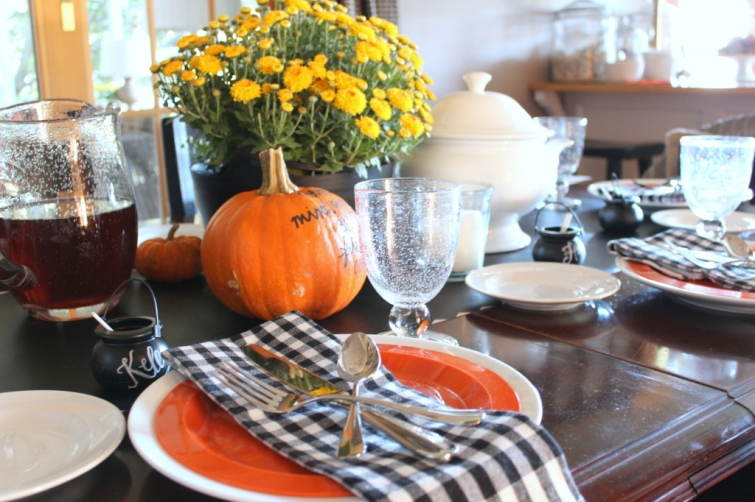
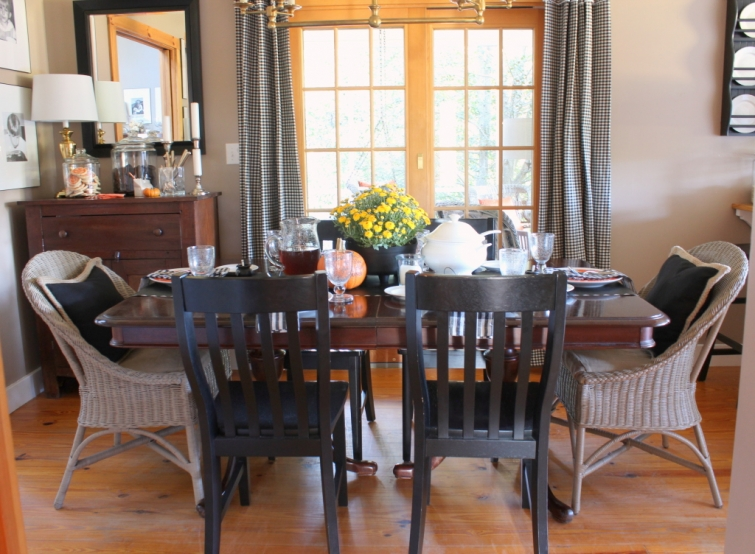

.png)
.PNG)
.PNG)
.PNG)
.PNG)
.PNG)
.JPG)
.JPG)
.PNG)
.PNG)


I mentioned in our last post that I was using yellow and black in the family room because there was soooo much orange and black in the rest of the house. Â Today you are going to see what I mean about that typical Halloween color scheme. Â It is everywhere in the dining room and kitchen!
The curtains are back to black and white gingham, and the table is set for our Halloween dinner.
There are orange plates and black and white checked napkins for the place settings. Â I picked up some small black cauldrons (from Target) to use for individual servings of butter.
A larger black cauldron holds mums for the centerpiece.
 And the menu for the dinner is written with a chalk pen on a bright orange pumpkin.
And the menu for the dinner is written with a chalk pen on a bright orange pumpkin.
Those orange plates are deep enough that they can handle the beef stew almost like a bowl.
Over on the dining room cupboard you will find more orange in the form of decorated shortbread cookies and napkins.
And you will also spot it in the built in cabinet there as well.
The island also gets orange striped napkins by the cereal bowls.
Pops of orange appear in the kitchen too (along with the black in the gingham curtains.)
Even the doughnuts I picked up this week had orange frosting!
The counter has orange and black cookbooks.
The chalkboard sports a recipe for a delicious (and easy!) pumpkin pie dip.
And that brings us back to the dining room ready for our Halloween dinner. 🙂
I hope you are reading this before midnight on the 30th so that you can enter one last time for the fun drawing of the Melanie O’Hara Traveling Tea Ladies mystery series and tea goodies. All the details are here.
And I hope your Halloween is a day full of fun treats!


.PNG)
Kelly,
You did such a great job with touches of orange, but just the right amount. Have you cooked anything from the Momofuku cookbook? Our oldest so asked for it forChristmas one year. I’m not sure he has cooked from it ( too busy).
I love the menu on he pumpkin idea and will definitely use it soon.
Happy Halloween.
Karen
————————————————————————
That is so funny that your son wanted the Momofuku cookbook because the copy actually belongs to our middle son. He has cooked one entree out of it, but I have not cooked anything from it. Glad you liked the menu on the pumpkin idea! 🙂
Kelly
Kelly,
My two favorite things about this post are the black/white check napkins AND the menu written on a pumpkin, I am “It’s the little unexpected things that make me happy” kind of girl.
Oh and I love a small dinner party.
DiAnne
I’m LOVING all the orange and black little details in your house!!! What a great idea to write the menu on pumpkins! Your handwriting is beautiful by the way 🙂
Thanks for sharing your home with us!
PS I keep watching your filled jars and copying your ideas!
Don’t ever stop using your talents.
The children in your classroom are blessed to have you for a teacher.
Hi, Thanks for inviting us over!
You know I am always .watching for your next post.
Question: Give details about the chalk pen, please.
My white one from Amazon does not erase. Do they usually?
I know you don’t want to erase a pumpkin but there are times you need to erase.
I am your twin in country design that loves, loves, RED, black and white. So true how you can change out color with the blk/wht now seeing your orange!
——————————————————————–
Nan, I use a wet cloth (or paper towel) to wipe it several times. That usually takes it all off, but it leaves behind the shadow of the letter. So then I wipe it well with a Mister Clean magic eraser, and that usually works. Hope this helps!
Kelly
Very festive, as always:) I love the menu on the pumpkin, I will be stealing that idea! We are hosting for Thanksgiving and, once again, I will be stalking (in a nice way) your blog for ideas. Thanks for sharing, Kelly;)
Happy Halloween, Kelly! Your kitchen and dining room are as creative as ever! God had blessed you with the gift of creativity, that’s for sure!
What a pretty table! As ususal! We are missing Halloween because we are heading to Atlanta for the Ga Tech Homecoming Game tomorrow, then Phantom of the Opera at the Fabulous Fox Theater!! Can’t wait!!
———————————————————————–
What a fun coincidence! Our daughter’s college homecoming was also this weekend (but not at Tech) AND she went to see Phantom of the Opera on Sunday. You two were probably quite close to one another. 🙂
Kelly
Everything looks so festive! I’m loving those orange plates…where did you get them? 😉
Every room you decorate & every table you set is so very inviting & lovely–I want to come have tea @ your house!
Love the orange shortbread cookies!
Take care.
Emily
Well, I decided to check my mail and there it was!! Your wonderful dinning room and kitchen decorations. I got all my items for the deep dish pizza while I was out today. Also engredients to make beef stew very soon as the weather is suppose to turn cool over the weekend! Great minds– you know!:) also going to make a pumpkin cake– no tricker treaters here at the lake:( too scary and deep in the woods! Hope you have a ” not too scary ” Halloween at school tomorrow and hope a few sweet “boos” may come your way!!:)
I love decorating for fall. Looking forward to reading those books while I drink a cup of tea!
Kelly,
Love your idea of writing your Halloween dinner menu on a pumpkin! I also noticed that you had several products from Williams-Sonoma, where I work as an associate, always a good choice. Take care, Lindy
Kelly,
Your home always look so welcoming and inviting. I love it all. The coffee station and the donuts call to me. They say pour a cup of coffee, grab and donut and lets go sit on the porch and chat awhile. Thanks for sharing your ideas and photos. Have a happy Halloween!
I adore all the black & white checks and gingham!! Thanks for sharing your beautiful home with us!!
Kelly,
Will have to run to Target tomorrow to see if they still have the small and large cauldrons – will use next year. Where did you find those orange plates? Your decorations are fabulous – you even have orange scissors on your desk – perfect!
Monika
——————————————————————–
shhh…don’t tell, Monica. The plates are plastic, and they came from Walmart. 🙂
Kelly
Yummy! I’ve also noticed how you have the best handwriting and printing. That’s an art! Do you keep your pumpkins until Thanksgiving or do they disappear after Halloween?
Look very festive! Love the view looking at your sink in the kitchen. Your home looks very warm and welcoming. I would provide a good home for those tea goodies!